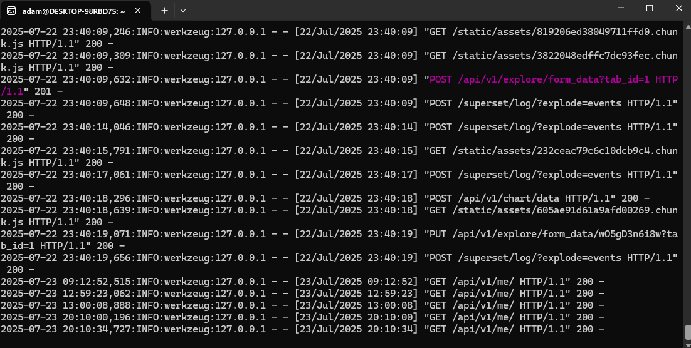
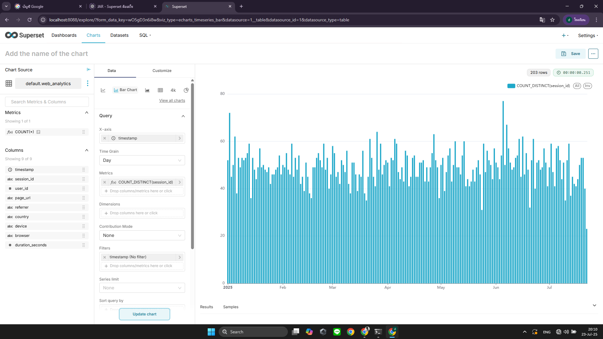

sudo apt update && sudo apt install -y build-essential libssl-dev libffi-dev python3-dev python3-pip python3-venv libsasl2-dev libldap2-dev libpq-dev
python3 -m venv superset-env
source superset-env/bin/activate
pip install --upgrade pip setuptools wheel
pip install apache-superset==3.0.2
pip install marshmallow==3.19.0SECRET_KEY = 'your_random_secret_key'
export FLASK_APP=superset
export SUPERSET_CONFIG_PATH=~/superset_config.pysuperset db upgrade
superset init
superset fab create-admin
superset run -p 8088เมื่อเรียกใช้งาน Superset Server ได้สำเร็จ จะเห็น log ดังภาพ:
sudo apt install clickhouse-server clickhouse-client
sudo service clickhouse-server startCREATE TABLE students (
id UInt32,
name String,
score Float32
) ENGINE = MergeTree()
ORDER BY id;
INSERT INTO students VALUES (1, 'Alice', 89.5), (2, 'Bob', 76.0);ผ่าน Superset UI → Add Database
clickhouse+native://default:@localhost:9000/defaultสร้าง Dataset → สร้าง Bar Chart → นำไปวางใน Dashboard
